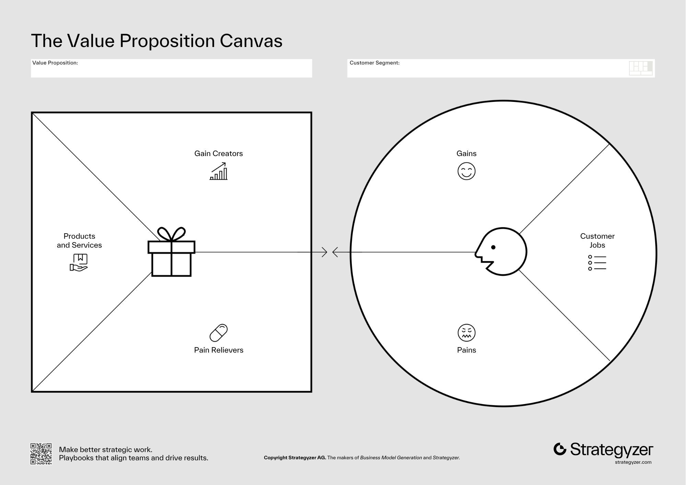

The canvas: two sides, one fit.
Your problem is validated. Ten interviews, clear pattern, real pain. What is the most expensive move you can make next?
Bela Gupta D'Souza had validated her problem twice. Professionally, as a Groupon Thailand co-founder and ad-tech CEO, she watched brands chase moms as the household's chief purchasing officer. Personally, as a new mom in Manila, she lived the pains herself: baby shopping scattered across malls and marketplaces, zero curation, and a real fear of fake or unsafe products.
What she did next is the move this course teaches. Instead of listing features, she shaped every part of edamama's offer against a named pain: curation by age and stage answered the fragmentation, authenticity vetting answered the fear of fakes, and one-stop delivery answered the scattered mall trips. Investors followed the fit: a US$5M round in 2021, then a US$20M (around ₱1.1B) Series A in 2022, past US$35M in total by 2023. By 2026 edamama runs 10 physical stores and serves a community of over 2 million parents.
For new parents, safety and authenticity matter as much as price.Bela Gupta D'Souza · edamama · Realistic Optimist interview, 2026
Here is the tool itself, exactly as its makers publish it. Keep it on screen; the whole course happens inside these boxes.

Read it right to left. The circle is the customer profile: the jobs they are trying to get done, the pains that bite while they try, and the gains they hope to enable. You already hold this material; it is your Course 2 interview notes, sorted into three piles. The square is the value map: the products and services you ship, the pain relievers that remove specific pains, and the gain creators that produce specific gains.
The two arrows meeting in the middle are the whole point. Fit means every top-ranked item in the circle has exactly one matching item in the square, and nothing in the square floats unmapped. One reliever per top pain. One creator per top gain. That one-to-one rule is a feature-soup prevention tool: without it, founders pile up relievers for interesting-but-low-priority concerns and call the result a product. The canvas is not a marketing poster. It is a design constraint that protects you from your own enthusiasm.
| Circle: what moms told her | Square: what she shipped |
|---|---|
| Pain: baby shopping is scattered across malls and marketplaces | Reliever: one-stop shop, curated by age and stage |
| Pain: fear of fake or unsafe products | Reliever: authenticity and safety vetting on every listing |
| Pain: no time for mall trips with a newborn | Reliever: delivery, later same-day, plus stores where the customers already are |
Three ranked pains, three relievers, three straight lines. Nothing floating. That is what fit looks like on a real company.